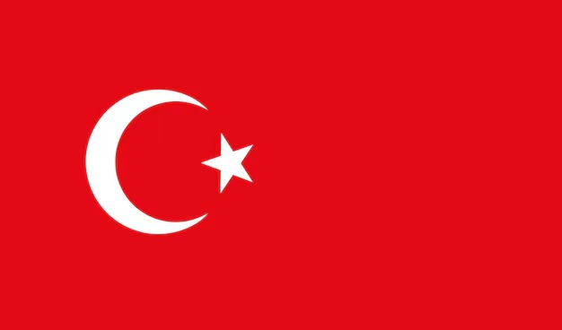
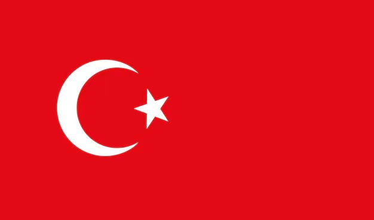

ERASMUS+
Turcja-Manavgat
16.03.2025 - 29.03.2025
Dwutygodniowy projekt mobilności edukacyjnej dla uczniów kierunków technicznych, umożliwiający zdobycie międzynarodowego doświadczenia zawodowego w malowniczej miejscowości Manavgat w Turcji.
O Projekcie
Program Erasmus+ Turcja-Manavgat 2025 to unikalna szansa dla uczniów szkół technicznych na zdobycie międzynarodowego doświadczenia zawodowego. Podczas dwutygodniowego pobytu w Turcji, uczestnicy będą mogli:
- Odbyć praktyki zawodowe w międzynarodowym środowisku
- Poznać turecką kulturę, tradycję i kuchnię
- Zwiedzić najważniejsze atrakcje turystyczne regionu
- Nawiązać międzynarodowe kontakty
- Doskonalić umiejętności językowe
Projekt jest finansowany ze środków Unii Europejskiej w ramach programu Erasmus+.
Cele Projektu
Główne cele projektu Erasmus+ Turcja-Manavgat 2025:
- Zwiększenie mobilności edukacyjnej uczniów szkół technicznych
- Podniesienie kompetencji zawodowych uczestników
- Rozwój umiejętności językowych i międzykulturowych
- Wzmocnienie współpracy międzynarodowej między instytucjami edukacyjnymi
- Promowanie idei uczenia się przez całe życie
- Zwiększenie szans uczestników na rynku pracy
Po zakończeniu projektu uczestnicy otrzymają certyfikaty potwierdzające zdobyte umiejętności oraz dokument Europass Mobilność.